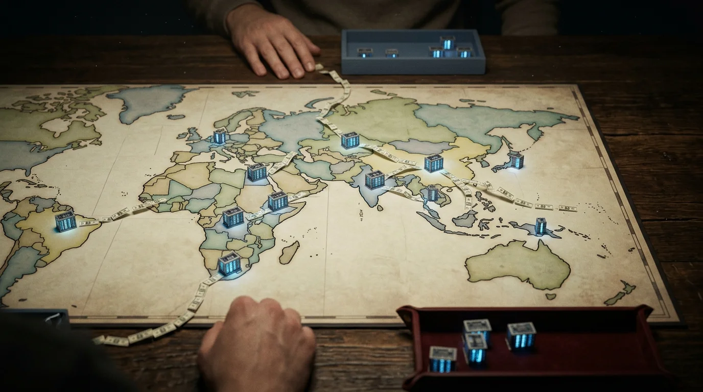

On August 21, 2026, Papua New Guinea's Minister for State Enterprises presented Kumul Cloud Infinity, which the country has described as its "first sovereign cloud and AI data centre."[1] The system is perfectly in the Western manner: cloud software from CloudSigma, a company based in Zurich, which offers the same "sovereign" platform to a number of service providers in over thirty-five countries; hardware from Hewlett Packard Enterprise; NVIDIA H200 GPUs; and gas-powered backup power supplied by a local partner.[2] The operator is Datec PNG, a subsidiary of Telikom, which is itself held by Kumul Consolidated Holdings, the state's holding company. It was launched as a commercial success.
None of the following information was made public in the operator's press release, the holding company's release, or any subsequent reports: the cost, the megawatts, the GPU count, the rack count, the tier certification, or the financing source. All of these details. I have checked six sources, including the two official ones. The extent and cost of Papua New Guinea's sovereign AI infrastructure are a secret, possibly even from the people paying for it.
The other building is located across town. The National Data Center was constructed by Huawei and opened in 2018, with funding from a reported $53 million loan from China’s Export-Import Bank.[3] In 2020, a review carried out by Australia’s foreign ministry on behalf of PNG’s own cyber-security agency discovered that the facility’s encryption algorithm had been "openly broken" for years, that its firewalls had reached the end of their life two yearsprior to the day it opened, and that its core switches were outside the firewall, meaning that remote access could not be detected.[4] Most of the government departments had never moved into the center. PNG’s ICT minister described the asset in official remarks as "a failed investment."[5] It has not been made public whether the loan has been repaid.
A single capital, a single decade, and the buildings of both superpowers.
The correct approach to understanding those buildings is not to look at IT procurement; it is to consider the oldest form of transaction in geopolitics:the foreign base. A base is not simply about the concrete; it is about physical presence. The patron puts hardware within the host's territory, and the host shows its alignment by accepting it, while rivals are prevented from using that ground. A data center is not a base: it has no soldiers, no jurisdiction, and it does not deny ground to anyone.
All of the instinctive interpretations are incorrect, and the reasons for this are worth giving. The account is not about Chinese debt traps. According to the specialist literature, Beijing has arranged the loans so that they are repaid, either by collecting the debt or by rescheduling it rather than by seizing the assets; in this case, the loan is the result, not the trap.[6] It isn't a story about NVIDIA taking control of the Global South. When its own chief financial officer speaks of sovereign AI revenue, the only countries mentioned are the rich ones.[7] Nor is it a story about gullible governments, as Port Moresby itself will show before this article is finished.
What a base actually costs, and who pays
For 70 years, the foreign base machine has operated using a well-documented payment route from patron to host.
Djibouti is simultaneously renting out its geographical location to five armies. According to the most recent figure provided by its finance minister, the United States paid around $65 million per year for Camp Lemonnier, France paid about $30 million, China was reported to pay $20 million for its first overseas base, and both Italy and Japan paid roughly $3 million each, making the total annual amount about $121 million. A Djiboutian official summed up the nation's business strategy in a single sentence by saying thatthe country's geography is its primary national resource, just as oil is for the Gulf states.[8]
Kyrgyzstan conducted its trade through auctions. In 2001, the United States paid about $2 million per year for the Manas Air Base. By 2006, the rent had increased to $17.4 million. In 2009, Moscow made a counter-offer to Bishkek in the form of $2.15 billion in aid and loans so as to drive the Americans out; Kyrgyzstan declared that it would close the base, allowed the bidding to proceed, and then re-let it to the United States for $60 million a year, thirty times the original price.[9]The geography had not changed; what had changed was that two patrons were now bidding. Likewise, the 2025 treaty concerning Diego Garcia obliges the United Kingdom to pay an average of about £101 million per year to Mauritius, for a period of 99 years, in order to keep the Indian Ocean base which it leases on to the Americans, though the bill implementing the treaty has stalled at Westminster and, at the time of writing, no pound has yet been paid.[10]
Honesty demands that we look at counterexamples as well: Japan pays Washington around ¥211 billion each year in host-nation support—approximately $1.5 billion, depending on the exchange rate—and South Korea about $1.1 billion.[11] Therefore, the rule has never been that 'the patron pays'. The rule is thatthe direction of payment follows bargaining power.[12] When the host country is rich, under threat, and needs the patron more than the patron needs the location, the host pays for protection. In the case of poor host countries with geographical advantages, they receive payment because of their location. If all you have is your position, that is worth actual money, and the competition among the superpowers drives up the price.
For AI data centers, almost everyone now pays the way Japan does, even countries that have nothing to offer except their location.
The ledger
For this article, I compiled a census of sovereign cloud and sovereign AI initiatives in the countries that the AI conversation never addresses: not the United States, China, the EU's big five, or the Gulf states, but rather the long tail: 59 programs in 47 countries, ranging from Papua New Guinea to Paraguay, Zambia to Kazakhstan. Almost all of them have been announced or launched between January 2024 and August 2026, together with a small number of earlier projects kept as precedents.[13]
There is no information given about a single signed power purchase agreement. Of the 23 that announce an investment figure, only seven are based on actual documentation, such as a signed contract, a disbursement, or a formal EU award. The others consist of rounded figures—such as $250 million, $1 billion, and $10 billion—announced at GITEX or GTC, the Gulf and NVIDIA trade shows, not at ribbon-cutting ceremonies. Specific and documented figures appear only in cases where a lender's or counterparty's documentation requires them: €66.55 million in a document relating to an African Development Bank project, €36 million in the EuroHPC procurement—the EU's joint supercomputing initiative—and an $18 million three-year contract with Oracle.
In all other cases, the figures are given in rounded form. Forty-two per cent of the programs have never gone beyond the paper stage, meaning only an announcement, a policy, or a memorandum of understanding. Nearly sixty per cent have not produced any actual computing power at all. Very few name a paying customer; in instances where an anchor tenant is mentioned, it is almost always the government paying for the building, and a true arm's-length tenant (such as Kenya's Everse Technology or Thailand's Mahidol University) appears in only a very small number of cases.
It is normal for private data centers not to disclose their power purchase agreements. However, in the case of these projects, which arestate-sponsored sovereigntyinitiatives sold to legislatures on the grounds of national interest, the entire risk lies in the electricity bill, and by limiting the count to the 31 programs that are either currently operational or under construction, the figure of zero remains unchanged
Prepare the ledger for these transactions based on the two-column format that any analyst would use.What does the host get, and what does the host pay?
Kenya obtained a loan of RMB 1.225 billion, approximately $180 million, from China EXIM at an interest rate of 2 percent, with a grace period of about seven years, to construct the Konza National Data Center, with Huawei as the sole contractor. The first payment was due on March 31, 2026.[14] According to Kenya's Auditor-General, the facility being repaid for had a disaster-recovery site that was "not operational", lacked fire suppression systems, with the data being backed up on the same servers situated in the Primary Data Center, no data protection officer having been appointed, and no vetting having been carried out of either the customers or the staff within the building.[15] Those are the shortcomings of the state operator, not the contractor's; yet they are the very things the loan was used to acquire. The cloud revenue earned at Konza for the year up to June 2025 was KSh 126.8 million, which can be rounded to 1 million dollars. It had decreased by 16 percent.[16]
In all cases where China is not the one providing the funds, the situation fails to improve. Instead, the host country and its partners just pay each other. Armenia is financing its declared $500 million NVIDIA-stack 'AI factory' via a private developer and a diaspora foundation. Kazakhstan has entered into a $10 billion framework agreement for a gigawatt-scale 'Data Center Valley' on its own and its partners' balance sheets. The financing arrangement in Papua New Guinea remains, as has been noted, a secret.
The census involves two types of arrangements. In some cases, the program is based on state contributions: the government borrows money in order to build the infrastructure itself, using its own balance sheet, for example, in Kenya, Zambia, Senegal, and the 2018 PNG facility. In other instances, it is a private colocation venture—such as Malaysia’s YTL, the pan-African Cassava, Vietnam’s FPT, and an Indonesian project financed by I Squared—where a foreign fund assumes the risk of construction and 'sovereign' is used as a marketing point in government tenders. Armenia and Kazakhstan fall between the two categories, with both state and private partners sharing the cost. It is important to distinguish between the two: the group comprising loans and Chinese-built projects is uniformly disappointing, whereas when a private operator assumes the commercial risk, the investor bears that exposure, not the taxpayer.
Yet even in the case of privately financed projects,the silicon is imported under the laws of another country, and on the American side, there is no concealment regarding the direction of this flow. OpenAI’s program for third countries states that partner countries “will invest in expanding the global Stargate Project”: the host country is required to fund the patron’s network.[17] It is reported that the UAE’s chip deal requires that for every dollar Abu Dhabi invests in the Stargate UAE project, a dollar must also be invested in AI infrastructureon US soil.[18] The Export-Import Bank’s new AI export program is, in effect, buyer’s credit: America lends you the money needed to buy its chips.[19] The United States’ development finance arm has granted one major loan for a data center in Africa: up to $300 million to a commercial pan-African company, with $83 million disbursed by 2022, the most recent figure available.[20]
At the same time, the demand for the facilities said to have been built is measurable: the $1 million per year in Konza, which is decreasing, is an example of the situation in one of Africa's most digitally advanced economies. You can't fill 100 megawatts with that amount, any more than you can fill ten. That is why the biggest initiatives in the census have quietly given up pretending: Kazakhstan claims to generate "at least $3 billion in annual export revenue," and Guyana's facility "will meet international demand.” Put simply,since there is no domestic demand for such services, we are going to have foreign customers' computing carried out on our grid, on our balance sheet, under our own flag.A sovereign facility whose business case is based on serving foreign customers is not true sovereignty; it is simply an export processing zone with more effective marketing.
The lack of demand refers to demand for frontier-training; real demand does exist for ordinary enterprise colocation—such as disaster recovery, hosting, and data repatriated from Frankfurt—and this demand fills private data centers like those of YTL and Cassava. Moreover, the offshore option is by no means free, since renting hyperscale capacity abroad involves currency outflows, latency, and exposure to foreign jurisdictions, which later becomes clear in the health-data deals.
The company at the heart of the situation has stated its view in the one language that matters. When asked by analysts during the February earnings call, NVIDIA's chief financial officer said that sovereign AI revenue had "more than tripled" to over $30 billion in fiscal 2026, with the increase mainly driven by customers in five wealthy countries.[7] The term "sovereign AI" has not appeared in either an NVIDIA 10-K or a 10-Q; it only appears in comments made during earnings calls, in press releases, and in the stylish annual report, and is absent from the officially audited documents. In the first quarter of fiscal 2027, sovereign revenue continued to rise — by more than 80 per cent year on year, compared with 85 per cent for the company as a whole — and it was included in a new classification divided between "Hyperscale" and "ACIE" (AI Clouds, Industrial and Enterprise), a breakdown that no longer separates out sovereign revenue and in which the word is completely omitted from the press release.[7] The label is being phased out and absorbed into the hyperscale category just as the long tail embraces the proposal.
The armory
The second key point after the payment rail is that while the host controls the territory, the patron controls the weapons: sovereignty extends to the perimeter but not to the armory. In this case, the argument "these are merely commercial arrangements, not bases" is answered by precedent, since one type of procurement has always included a supply restriction and a monogamy clause: advanced arms. Turkey was excluded from the F-35 program in 2019 for having purchased Russian air defense systems; the fighter is the proper analogy here: an alignment tool priced as a capital expenditure and obtained at a price that is too high. The difference in this instance is even more stark:at least with the F-35, a buyer gets a weapon that works for him, whereas the statistics show that buyers have no workloads. The alignment is, in fact, the whole product. The restriction itself is incorporated into US regulations and functions in three stages. Those who have read "Access, Disable, Destroy" will be familiar with the chip layer of the coercion system; the rings are that layer divided up by time—the chips you have not yet received, the chips you currently have, and the chips themselves.
The first layer relates to future supplies and is firmly in place.Any export license granted under the US regulations concerning AI chips is, by regulation, "open to revision, suspension or revocation in whole or in part without notice".[22] This is not merely a possibility; it has already been put into practice by revoking licenses against the adversary and by making midstream revisions to allied buyers, though not yet against a long-tail recipient. In 2024 alone, Washington canceled eight existing export licenses to Huawei, including those held by Intel and Qualcomm. In October 2023, orders from the Gulf region for NVIDIA chips were halted midway due to a change in the rules, as noted in NVIDIA's own 8-K filing, which lists Saudi Arabia and the UAE.[23] The regime has been rewritten on three separate occasions within three years and can therefore alter the terms beneath whatever system a recipient is using. The rule issued in July 2026, which facilitates access for the UAE, is the most revealing of all: chip exports on a license-free basis go only to a whitelist of eight named American companies and to specific UAE government agencies—plus G42 and Core42, the UAE's own national champions, whose eligibilityautomatically expiresin April 2027 unless they arrange a restructuring that satisfies Washington.[24] Even the most favored recipient in the system has its status on a lease that includes a sunset clause.
The Validated End User (VEU) regime, which applies to data centers, serves as the link between the first and second rings, the condition for secure and lasting supply being a check of the delivered floor. If a foreign facility wishes to gain access to chips on a durable basis under the VEU arrangement, as stated in the Federal Register, it agrees to "on-site compliance reviews by representatives of the United States Government" and submits semiannual reports to Washington covering its chip inventory, its compute utilization, and its customer list.[25] At present, no host country is included in this VEU scheme; it has so far only been put into practice for deployments at the scale of hyperscalers, and the July 2026 UAE license-free authorization is now listed alongside it. Nevertheless, it is a model that can be applied to any long-tail host that may grow in size at some point.A data center considered sovereign and operating under the VEU system must submit its customer list to a foreign power twice a year and allow that power's inspectors to conduct inspections at the facility.Status-of-forces agreements have granted American military police authority over American personnel and installations located on the soil of a host country; similarly, the VEU gives American export-control officers access to the server room. And if your company rents capacity in one of these facilities, then your name will appear on that ledger.
The second ring involves hardware, the mechanism in this case being a failure rather than a switch.A frontier cluster is not a fixed entity; it is a subscription. CUDA updates, firmware, enterprise software licenses, interconnect spares and RMA replacements all come from the vendor under terms that include US export law, and once the operator is placed on the Entity List — that is, Washington's export blacklist — any servicing, spares or updates will require licenses which are likely to be denied. If a cluster is severed, it does not cease to function; instead, it deteriorates, drifting away from the frontier as the software stack freezes and becomes out of service after a number of years, because failed GPUs, optics, and switches exceed the capacity of an empty spares store. The possibility of disablement by the supplier is no longer merely theoretical but directly relevant: equipment from John Deere that was looted from Ukraine and taken to Chechnya was remotely locked via the dealer's connection, according to the reports; in 2024 Microsoft cut Russian companies off from theirexistingcloud services as a result of EU sanctions; when Nokia and Ericsson withdrew, Russia's mobile networks were left to degrade without attention; and ASML has reportedly promised the Dutch government that it can remotely disable EUV machines in the event of an invasion.[26]
The third ring is the one people most frequently inquire about — a kill switch built into the silicon — and the only straightforward thing to say is that it has been claimed by Beijing, denied by Santa Clara, and not verified by anyone.In July 2025, China's cyberspace regulator called NVIDIA over alleged 'tracking and positioning' and 'remote shutdown' capabilities in its chips sold in China; NVIDIA responded with a corporate blog post that, in effect, stated there wereno backdoors. No kill switches. No spyware.[27] A congressional bill requiring location-verification features on AI chips exported from the United States has passed its committee but is not yet law; should it become law, the third ring would cease to be a point of dispute and become mere speculation.[28] I will not state that the third ring is a fact, nor should anyone else. However, note what the dispute itself shows: both superpowers take the possibility seriously enough to pass legislation on it and summon company executives to discuss it. When it comes to bases, the issue is not whether the weapons on them are loaded. It is about who holds the keys — and no one disputes that the keys are not in the host's pocket.
The rings are not an American patent; if you want to see the first ring demonstrated on a live subject from both sides simultaneously, Malaysia conducted the demonstration in May 2025. On the 13th, Washington stated that using Huawei's AI chips anywhere in the world would risk breaches of US export controls. Six days later, a deputy minister from Malaysia launched what was described as the region's first sovereign full-stack AI system — comprising Huawei Ascend chips and DeepSeek models, thereby presenting the entire Chinese alternative. However, within about forty-eight hours, the ministry withdrew the announcement.[29] In the same week, a small country experienced the effect of Washington's first ring and Beijing's supply chain, and its sovereignty was publicly revised twice.
The host goes around the perimeter; the patron has control of the armory; and, unlike any other base host in history, this one paid for the armory out of its own money first.
Two empires, two ledgers
The situation would be neater if all this were the result of two master plans; it isn't, since the basic metaphor introduces a kind of intentional purpose on the part of a patron, which the evidence does not back up. Neither empire came up with this plan. Their failures are mirror images of each other, and it was only in the last three years that either one had begun to act with deliberate intent.
China originally built the ladder by accident and has since taken on the role ofgoverning it. According to peer-reviewed literature, the "Digital Silk Road" has no clear plan of action or strategy for implementation; as of the most recent public count, only 16 countries had signed a DSR agreement, contrary to Huawei's own figure of "800+ government cloud projects worldwide."[30] A study by AidData, which examined more than thirteen thousand Chinese projects, found that joining the Belt and Road did not alter in the slightest who Beijing funded or the terms on which funding was provided: it was essentially a rebranding rather than a shift in strategic direction.[31] Chinese digital lending to Ethiopia began in 2006, 13 years before Addis signed any agreement that included the phrase "Belt and Road". A truthful account of the period from 2006 to 2022 is that Huawei was pursuing revenue, the two policy banks were trying to increase their loan volumes, and Beijing simply painted a slogan on the outcome.
Yet emergent sequencing had nevertheless created a genuine ladder, and you can climb it. In the case of Senegal, over eighteen years with just one vendor: a government intranet in 2006, followed by three thousand kilometers of fiber, then an $85 million China EXIM broadband initiative whose key element was a national data center into which government data was sent back, then a Chinese-funded 'Smart Senegal', and then a Safe City program featuring nearly five hundred facial-recognition cameras.[32] Pakistan has the entire ladder along with the geographical advantages—fibre running along the China–Pakistan Economic Corridor, the Huawei-built PEACE cable at Karachi and Gwadar, safe cities, and now a Huawei AI data centre—as well as the same vendor at each stage and the policy banks at most of the steps.
Since October 2023, the retrofit has become intentional. At the Belt and Road Forum, Xi launched China's Global AI Governance Initiative.In July 2026, the World AI Cooperation Organization was established in Shanghai with twenty-nine founding members, including Laos and Pakistan, which are described as ladder clients. The UN's Group of Friends on AI capacity-building, consisting of some eighty countries, is jointly chaired by China and Zambia—a country that was a $65 million client of EXIM and Huawei in the first, pre-AI round of data center lending and whose own parliament had recorded hardware that had been installed in a district without any electricity.[33] The country that had been in debt then became a co-sponsor. Throughout all this institutional development, Chinese sovereign lending commitments, according to Boston University's database of the two policy banks, have collapsed from $62.5 billion in 2016 to $6.1 billion in 2024.[34] China is now running the institutions while spending 90% less money. The brand began as fiction and later became a reality.
At the same time, the United States has funds without a clear plan.In principle the necessary structures are in place: an executive order of July 2025 concerning the export of the 'complete American AI stack', an American AI Exports Programme, a diplomatic group known as Pax Silica, Technology Prosperity Deals, a new EXIM financing facility, and a development finance corporation for which Congress has more than tripled the lending limit, raising it from $60 billion to $205 billion.
In reality, the executive order does not name any specific countries; it is up to private consortia to choose the markets, and the Commerce Department issued an official request asking the public to indicate which countries should be given priority. Twelve months after the order, no export packages have been designated, and no EXIM AI deals have been financed. All four of the Technology Prosperity Deals have gone to the United Kingdom, Japan, South Korea, and Sweden. At its June summit, Pax Silica had twenty-four signatories, none of whom were from Africa, and its main assistance program amounts to $50 million — for a supply-chain credentialing platform which has been piloted in Panamanian ports.[35] The White House AI czar himself described the importance of the situation by saying: “China is exporting Huawei chips and DeepSeek models to the Global South. If we don’t make it just as easy to export the American AI stack, we will lose this technology race in large parts of the world.”[36]
The American response has instead been one of exclusivity. In August 2026, Washington drew up letters to the thirty-five countries that had signed the AI Opportunity statement, stating that membership in Pax Silica could not be combined with 'duplicative initiatives' – a formulation officials confirmed was directed at China's new Shanghai organization. "You can't have it both ways," one official put it.[37]
As for symmetry, China has constructed a ladder which it both finances and operates, and now sells the franchise; the United States, on the other hand, sells permission slips. In both cases, the host is not paid. And now that both of them are in control, each has begun to demand the exclusive loyalty that patrons had previously been able to purchase.During the Cold War, when a patron asked for exclusivity, the check was included. The AI empires have dropped the check but retained the clause. It is precisely this that makes the next step possible: an auction requires two bidders who both care, and this is the first time that both do.
The one that played it right
This brings us back to Port Moresby, where the two buildings can be understood.
Papua New Guinea never managed to get a data center operating, since it never really needed to: it gained the benefits of an auction it didn't have to organize by simply appearing cooperative and, at the same time, clearly vulnerable to being aligned with the other side. The Huawei facility attracted Beijing's attention in 2018. Its subsequent public failure intensified the competition that Canberra was already engaged in for its own reasons. In the Pacific, Washington's side of this market is supported through its ally: the Coral Sea Cable, which is two-thirds funded by Australia in order to keep Huawei Marine out of the Pacific waters, and then, in December 2025, three Google subsea cables whose US$120 million domestic sections are funded by Australia under the Pukpukdefensee treaty, the 2025 Australia–PNG security pact.[38] And now, in 2026, there is a Western-stack sovereign cloud with a bill that no one will reveal — the only entry in PNG's ledger that might yet go wrong.
The fact that the money mainly went to Port Moresby is the key issue: this represents the proper historical direction, that of patron to host. PNG achieved this not by running its own servers but by being present on contested territory and allowing the anxiety to carry out the negotiations. It's not exactly like Manas — since PNG didn't run the auction — but it does follow the same lesson from Kyrgyzstan:be situated where both patrons have an interest.
Kenya played the opposite strategy and suffered two setbacks. It managed to secure the first round only to obtain a facility which its own Auditor-General has described as flawed. It then failed to complete the second round, as the billion-dollar Microsoft–G42 project came to a standstill when the government refused to provide the sovereign guarantees the deal called for and faced the facts. President Ruto, who, to his credit, finally admitted the obvious: "In order to switch on that one data center, we would have to cut off the power to half the country. It was then that I realized there was a problem." [39] Kenya paid for the base but received neither the rent nor the computing power.
The idea that developing countries do odd things is based on a misunderstanding of transparency. Kenya's failures are set out in full, item by item, because the Auditor-General of Kenya publishes them. The reason that Zambia's unused equipment is recorded is that Zambia's parliamentary committees publish it. However, if you look for usage data regarding a sovereign cloud program in Europe, you won't find it. The shortcomings of the long tail are apparent in how audit bodies in that area function; failures elsewhere are simply not published.
Where this goes
The reason the deals keep being concluded is that the purchases appear irrational when viewed merely as infrastructure — they aren't actually infrastructure; instead, they function as alignment tools and are treated as capital expenditures. Each party in the chain receives payment before the actual utility has been tested:the vendor is paid at the time of shipment, the integrator at the time of completion, the lender according to a schedule which has nothing to do with the level of demand, and the minister at the ribbon-cutting ceremony, which is timed to an election. The only party whose return depends on the building actually functioning is the state and its taxpayers. This is why none of the fifty-nine programs have disclosed a power purchase agreement. Such disclosure would introduce a price for the one risk that no one in the chain is actually taking on. Moreover, "insurance against foreign jurisdiction" does not save the purchases: the hedge fails because the jurisdiction arrives along with the racks — with imported silicon on revocable licenses and, at scale, a customer ledger being filed in Washington.
So: four calls, forward.
The auction will start — I'm putting the date at 2028.Although so far no state that is not aligned has managed to trigger a bidding war on the lines of the Manas example, all the necessary elements are now available: two patrons who want exclusivity in the area of writing, a public playbook provided by Port Moresby, and a shortlist of states that actually have leverage — namely, stranded energy, cable chokepoints, minerals, and international votes. Keep an eye on Djibouti itself, Morocco, Kazakhstan, and the Indonesian archipelago. The first state to be paid to host the computing facilities — payment without taking on debt — will have the same effect on this market as Kyrgyzstan did with base arrangements in 2009:it will make the cost of alignment visible. All the other host states will then renegotiate the following morning.
Second, the distress cycle will arrive on time, before the decade is over.A GPU that is serviced remains frontier-relevant for three to five years; the grace periods typically afforded by China's EXIM facilities of this kind are five to seven years—Kenya's, in the case that has been documented, was about seven. The first sovereign debt restructuring to include a dead data center is not a remote possibility. Zambia signaled the political implications in 2022 when it canceled the second round on the grounds of debt sustainability. The workout will have to be arranged since there is no published framework from either the IMF or the World Bank for valuing stranded compute.And the buildings will most likely be cleared in the only way that empty racks with grid connections and fiber can be cleared: by being sold at a discount to the hyperscalers and GPU brokers they were intended to escape. Bangladesh has already gone through this scenario: a Tier IV sovereign facility, with its hardware now obsolete, and the government's workloads having been migrated to servers in Singapore operated by Oracle.[40] On the current trajectory, sovereignty's end state will be that of an acquisition channel.
Thirdly, the stacks split apart, and the long tail becomes the testing area. I anticipatethat the American proposal will move downward toward the lower end of the market as the Gulf model becomes standardized by offering a full stack, VEU surveillance, and exclusivity letters. The Chinese offer, on the other hand, will move upwards in its new, capital-light version: replacing loans with reference architectures, using Ascend as the supply situation eases, making open-weight models the standard, and having the Shanghai institutions hold the votes. The countries included in this census are those in which the two offers will come together, with no allied group, no adequacy framework, and no EuroHPC to take in the clash. Malaysia's forty-eight hours served as a rehearsal; savvy host countries will realize that the credible threat of selecting Beijing is itself a valuable asset with market value.
Fourth, the currency in the following round is not computing power; it is data, energy, and votes.The patrons have no need for the long tail's demands. NVIDIA's revenue attribution does not mention any of these countries. What the long tail does have that the empires actually want istraining data, grid capacity, minerals, cable landings, and a place within the institutions that China is setting up– and this process has already begun. In 2026, the United States has entered into bilateral health agreements in Africa on the condition that aid be tied to data: Uganda has received grants from Washington in exchange for direct, real-time access to nine of its national health data systems for seven years; in six of the agreements, the host country is required to begin sharing pathogen samples within five days of a U.S. request.[41]
The empires have already found where the long tail's true resources lie, and they are not located in server rooms. The 'AI partnership' of 2028 is likely to appear less like a data center and more like a package – comprising your data, your resources, your UN vote – in exchange for membership rather than money.
Notes
The SOE Minister Duma will reveal Papua New Guinea's sovereign cloud and AI datacentre inAugust 2026;Kumul Consolidated Holdingswill alsolaunch its release.
Datec announces the launch of Kumul Cloud Infinity(22 August 2026);CloudSigmaprovidesinformation aboutitself (headquarters in Zurich, with 35 or more partner countries). Regarding the launch, the hardware vendors involved (HPE, NVIDIA H200) and the local gas-backup partner are included; the only providers named in the KCH release are Telikom, Datec and CloudSigma.
The Chinese Official Finance dataset is provided by AidData; the loan amount is given byThe Globe and MailandData Center Dynamics. The figure of $56 million is cited in The Diplomat (2021); the amount in kina (K130m) does not reconcile properly with either of the other figures.
With regardtoAustralia, the security of Huawei's data centre in Papua New Guinea was found to be "openly broken"(August 2020), following the release of the 65-page assessment commissioned by DFAT. The report itself is not available to the public; the findings are quoted as reported.
Timothy Masiu, who at the time held the position of Minister for Communication and Information Technology, stated inThe Globe and Mail(August 2020).
Regarding the debate about the debt trap:Deborah Brautigam’s “A critical look at Chinese ‘debt-trap diplomacy’”, published inArea Development and Policyin 2020; andAidData’s report onDelivering the Belt and Road. The repayment situation differs from country to country — Zambia, mentioned later, defaulted in 2020 and had its debt restructured — yet the intention behind these facility loans is for them to be repaid on time, not for assets to be seized.
In the NVIDIA Q4 FY2026 earnings call held on25 February 2026, sovereign AI revenues increased more than three times on a year-on-year basis, mostly due to customers in Canada, France, the Netherlands, Singapore and the UK;a search of the EDGAR database usingCIK 0001045810 shows that the term 'sovereign AI' does not appear in any of the 10-K or 10-Q filings, although it is used in the unaudited annual report wrapper and in the 8-K press releases; theNVIDIA Q1 FY2027 press releaseof 20 May 2026 contains no mention of 'sovereign' and instead includes a new Hyperscale/ACIE disclosure, while theQ1 FY2027 call transcriptstates that sovereign revenue rose by more than 80% year on year compared to the company's overall revenue growth of 85%.
The article in Al Jazeera,entitled“Our geography is our oil”: Why Djibouti hosts so many foreign military bases(April 2026), gives figures for the rent (US$65 million for the United States, $30 million for France, $20 million for China, about $3 million each for Italy and Japan; the total amount being about $121 million), according to Ilyas Dawaleh, the country's Finance Minister, and these figures are based on those from 2017. The expression “our geography is our oil” is used in the article itself, while the quoted statement (“our geography is our main national resource”) is from an unnamed Djiboutian official.
TheManas rent increased from about $2 million in 2001 to $17.4 million in 2006 and then to $60 million in 2009; the Russian package included an investment of about $1.7 billion and loans/aid amounting to $450 million. The 2009 re-lease was known as the "Transit Center at Manas."
The House of Commons Library (CBP-10273)andFull Fact have stated thatthe average annual payment under the deal in 2025/26 prices is £101m; the Government Actuary’s Department has valued the total over the 99-year period at £3.4bn on a net present value basis, as opposed to a nominal cash total of about £34.7bn. The legislation necessary to implement the deal came to a standstill in the Commons in early 2026 and the deal was reported to have been put on hold from April 2026, with no payments having been made (CBP-10464).
The agreement between Japan and the MinistryofForeign Affairs for host-nation support during the period FY2022–26 (amountingto about ¥211 billion per year; the dollar value varies between $1.4 billion and $2 billion according to the exchange rate); theKorea–US Special Measures Agreement for 2026(value of ₩1.5192 trillion, or about $1.1 billion).
Kent Calder,Embattled Garrisons(Princeton, 2007); Alexander Cooley,Base Politics(Cornell, 2008);and CooleyandNexon, “The Empire Will Compensate You,”Perspectives on Politics(2013). My version of the two-directional approach is a synthesis since Cooley and Nexon propose the patron-pays-client aspect while the alliance burden-sharing literature (Olson and Zeckhauser) deals with the other direction.
The data was compiled in August 2026 using government publications, documents from international financial institutions, announcements from vendors, and reports from the press; a full table with the sources for each row is provided in a companion appendix. The countries in question deliberately omit the United States, China, the major members of the EU, the UK, Japan, Korea, India, Israel, Singapore, Canada, Australia and the Gulf states. Although the builds funded by EuroHPC (in Greece, Bulgaria and Romania) are included, they are regarded as patron-to-host in a different way: an EU member country that makes use of a facility which it co-funds is a shareholder, not the host of a facility financed by a foreign patron. Kenya's Konza facility, the example worked out below, was a precedent from 2019 referred to in the text and is not counted twice in the current aggregates.
Project number 59366(involving China Eximbank, amounting to 1.225 billion RMB, signed on 26 April 2019, with a 2% fixed rate, a maturity of 19.5 years, a grace period of about 7 years and the first repayment due on 31 March 2026; Huawei acting as the EPC contractor). The value of this AidData project in constant 2023 U.S. dollars is $185.2 million; it was equivalent to about $180 million at the exchange rate in effect at the time of the signing in 2019.
The Auditor-General's report concerning the Konza Technopolis Development Authority as at 30 June YE.
Kenyan Wallstreet — the results for Konza in FY2025(cloud revenue dropped by 16.4% to KSh 126.8 million for the year ending June 2025; approximately $0.98 million).
OpenAI — OpenAI for Countries(in May 2025 it was stated that partner countries would also invest in the expansion of the global Stargate Project).
The direction of the flow was stated by OpenAI itself in its announcement (Introducing Stargate UAE: "UAE investment into U.S. Stargate infrastructure"); the dollar-for-dollar ratio referred to byAxios(22 May 2025) regarding the deal framework, not a clause in a published contract.
The ExportAI initiative(approved by the board on 21 May 2026) and theFederal Registerentry for theAmerican AI Exports Program(28 October 2025) indicate that the toolkit includes direct loans, guarantees and insurance; the buyer's credit facility is a form of financing provided to foreign buyers of US chips.
The US DFChasdisbursed $83 million to Africa Data Centres(commitment amounting to up to $300 million in total; the $83 million figure refers to the first disbursement and a later statement deals with a facility in Ghana under this arrangement).
The package for Data Center Valley(15 June 2026: the minister forecasts "at least $3 billion in annual export revenue");Cerebras — Guyana("international demand").
Section 15 CFR § 750.8(a)deals with licenses granted pursuant to the Export Administration Regulations, which include advanced AI chips; separate provisions apply to ITAR licenses (see 22 CFR § 120.18) with a similar effect.
The number of licences revoked, as reported in the Commerce correspondence for May 2024 (SCMP);NVIDIA's Form 8-K of 17 October 2023(naming Saudi Arabia, the UAE and Vietnam).
In the Federal Register — Enhanced Favorable Treatment for the United Arab Emirates(to come into effect on 10 July 2026), Supplement No. 8, eight named US companies together with certain UAE government bodies, and also G42 and Core42, will have their eligibility expire on 6 April 2027 unless a restructuring takes place.
In the Federal Register — Data Center Validated End User Authorization(2 October 2024) it states: “compliance checks carried out by representatives of the United States Government” and semiannual reports which include information on chip inventory, compute utilization, and “a list of current customers together with a description of their utilization.”
CNN–Deere/Melitopol(May 2022; the equipment was remotely locked through the dealer's connectivity, as reported; Deere has not confirmed this);The Record–Microsoft/AWS–Russia(March 2024: Microsoft suspended access for its existing customers as a result of EU sanctions; AWS said that it had blocked only new Russian customers since 2022); Reuters-syndicated reporting concerning the Nokia/Ericsson exit (December 2022);reporting on ASML's assurances regarding the remote-disable of its EUV equipment to the Dutch government(May 2024; these assurances were not confirmed by ASML).
The Global Timesreported that theCAC called on NVIDIAon 31 July 2025;in August 2025 the NVIDIA blogstated,"No Backdoors. No Kill Switches. No Spyware."
Chip Security Act (H.R. 3447), passed the House Foreign Affairs Committee 42–0 on 26 March 2026; no floor vote as of this writing. Senate companion:S. 1705.
BIS guidance on worldwide Huawei Ascend use(issued ~13 May 2025);Developing Telecoms — Malaysia sovereign AI launch(19 May 2025);Malay Mail — retraction(21 May 2025).
“’Digital Silk Road’ as a Slogan Instead of a Grand Strategy,”Journal of Contemporary China(2023; “neither a clear roadmap nor an implementation strategy”);Eurasia Group — The Digital Silk Road(2020; its “Countries signing DSR-specific MOU with China” table lists 16 countries);Huawei — R.I.S.E. reference-architecture launch(17 Sept 2025; “800+ government cloud projects”).
AidData —Delivering the Belt and Road(analysis of more than 13,000 projects, 2000–2017).
Georgetown Africa–China Initiative — Huawei and the building of Senegalese digital grammar, 2006–2024($85m China Eximbank broadband program, of which the Diamniadio data center was the centerpiece; ~500 facial-recognition cameras); AidData project records. (A lower disbursed-tranche figure — 46bn CFA, ~$83m — appears in Data Center Dynamics coverage; the appendix reconciles the two.) Pakistan’s current Huawei AI data-center project is privately financed (DCD — Indus Cloud/Huawei).
Chinese MFA — UN Group of Friends for International Cooperation on AI Capacity-Building(China–Zambia co-chairs);Report of the Committee on Cabinet Affairs on SMART Zambia, Thirteenth National Assembly(hardware installed in a district without electricity);AidData project #53093(~$65m China EXIM concessional, Huawei contractor);Xinhua — WAICO founding(29 founding states, Shanghai, July 2026).
Boston University Global Development Policy Center — 2025 brief on Chinese overseas development finance(sovereign lending commitments by China’s two policy banks: $62.5bn in 2016; $6.1bn in 2024).
Executive Order 14320(23 July 2025);Federal Register — call for proposals(10 Apr 2026);Federal Register — American AI Exports Program(28 Oct 2025; the request for information asks, among other questions, which countries or regions should be priorities);White House — Technology Prosperity Deals(UK, Japan, Korea; Sweden added May 2026);State Department — Outcomes of the Second Pax Silica Summit(June 2026; 24 signatories, none African);Pax Silica AI Assistance Project NOFO(Aug 2026; up to $50m; Panama ports pilot). The DFC lending cap was raised from $60bn to $205bn under the FY26 reauthorization (CGD).
David Sacks, X(22 Oct 2025).
Reuters-derived reporting on US letters to AI Opportunity signatories(Aug 2026): a State Departmentdraftletter to 35 signatories bars “duplicative initiatives whose expectations conflict with our own”; officials confirmed the target is China’s Shanghai organization. The letter was drafted, not yet sent, as of the reporting.
Australian High Commission PNG — Coral Sea Cable System(A$200M, ~two-thirds Australian grant; the funding decision was driven by Solomon Islands, with PNG added);ABC News — Google cables for PNG(13 Dec 2025; three Google subsea cables, US$120M domestic legs Australian-funded under the 2025 Pukpuk Treaty).
William Ruto (May 2026), perData Center Dynamicsand Kenyan press reporting on the stalled Microsoft–G42 Olkaria project, which the government declined to backstop with sovereign guarantees.
Faiz Ahmad Taiyeb (Special Assistant to the Chief Adviser, Bangladesh), perIndustry Insider BD: the Kaliakoir national data center “a complete failure… its hardware became obsolete over three years ago,” with workloads migrated to Oracle’s Singapore region; a separate in-country Oracle deployment serves other government entities.
ProPublica — U.S. Demands to Access Africans’ Data Raise Privacy, Sovereignty Concerns(17 June 2026: Uganda’s agreement grants “direct, real-time access to nine of the nation’s health data systems for seven years”; six pathogen agreements require the host to begin sharing specimens within five days of a US request). Kenya signed a $1.6bn version in December 2025; a court froze it days after signing, and the Court of Appeal temporarily lifted the freeze in May 2026, letting implementation proceed while the case continues. Ghana, Zambia and Zimbabwe rejected the initial agreements.